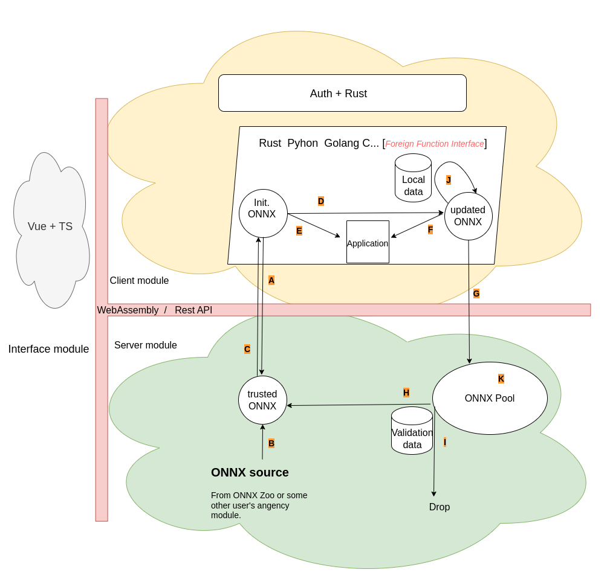

Propose
This project is going to create a federated learning framework with Rust. Known for its safety, Rust provides a terrific playground for our propose. Our propose is to design a architecture, which can combine decenterlized learning and cross-Silo learning use cases. At the same time, privacy problem and poisoning attack will also be token into consideration. This project has been divided into three modules. The communication can be implemented with REST-form between different ports OR with WebAssembly.

Implementation
There are two different designs has been mentioned, RestAPI with mirco-service and serverless WebAssembly.
RestAPI with mirco-service
Our three modules must be deployed in different ports. They communicate with http requests.
Serverless WebAssembly
The Interface module will be implemented with Vue and TS, Client module and Server module will be wrote in RUST at first, and the function from RUST will be compiled into WebAssembly and exposed to TS.
For this implementation, we will compile all the functions in client and server module into WebAssembly, and expose them to interface module with WebAssembly. In this way we can call all the funcions from interface module as serverless request.
A big question mark is, do all dependencies we need support WebAssemly?
Because of the rich ecosystem of Python for AI, we want allow our system also be able to run Python code, for training and ONNX pool aggregation. We have two options, compile Python into WebAssembly and call python from Rust with Foreign Function Interface. Which of them works and how they performance comes later.
Function
This chapter only describes the function of learning part. They are all marked to the corresponding part in archtechture graph.
A: Send request to initialize ONNX
As a project is going to be build, we send this require to server module, ask for initial ONNX file.
B: Initialization of trusted ONNX in Server module
Even in some projects only Client module is deployed, the trusted ONNX part will still be initialized in Server module, but only this part. To initialize the trusted ONNX part, multiple source options are allowed, such as from ONNX Zoo, or from some exposed trusted ONNX part in other project.
C: Assigne trusted ONNX to Init ONNX
Pull the newest trusted ONNX file from Server module to Init. ONNX in Client module. This step can be used as the response of function A, also can be used for updating Init ONNX file for next training.
D: Training model with local data
lauching model from ONNX, and training with local data. After each training task, our model will be saved as updated ONNX,
E: Init ONNX for application
If the Init ONNX is good enough, or project is not going to train any local data, we can launch the model from Init ONNX for Application.
F: Updated ONNX for application
When the model has been trained with local data, it should have different performance for application.
J: Continual training
If our model performs not enough good, we train it again and again, and replace updated ONNX in place.
G: Push updated ONNX to server module
According to the project function, we are able to push the updated ONNX to ONNX pool in server module.
K: ONNX pool function
The ONNX pool of each project can only contain certainly number of ONNX files. They can be aggreated, combined. For flexiblity, We hope multiple language can be supported, such as Python.
H: Update trusted ONNX
with aggreatation, combination we can update the trusted ONNX in server module. Before replacing the trusted ONNX, we can use validation dataset to confirm the performance of our new model.
I: Drop ONNX from ONNX pool
Validation dataset can be used to select some bad or poisoning ONNX and drop them.
Project initialization
Book for development
mdbook init book
mdbook build
for development manual and API implementation
Interface module
npm create vite@latest
user interface implementation with bootstrap. Wasm libraries will be imported as dependencies and be called with TS.
Database
we use sqlx-cli for migration. .env will be automatically loaded for sqlx-cli commands.
sqlx create database
sqlx migrate add -r user
sqlx migrate run
sqlx migrate revert
Liberal-federated-learning
cargo insatall wasm-pack
cargo insatall cargo-generate
cargo generate --git https://github.com/rustwasm/wasm-pack-template
wasm-pack build
call client and server API within workspace, build to WebAssembly for interface.
Client-module
cargo new client-module
client module API implementation
Server-module
cargo new server-module
client module API implementation
Development Records
Tue May 7 20:02:26 2024
RestAPI or WebAssembly
As the fundamental question of this project, we have to decide that how to communicate between different module, i.e., interface, client and server. Using Restapi with http request or Serverless Webassembly for function calling. Now we are exploring Webassembly, when Client module send data to postgressql for register and authentication, we discovered that Webassembly does NOT support sending postgressql request yet.
More detail, in our case, we want compose a function in client module, which will connect to postgressql and insert data into table. The same code work in pure rust project, but in our project, those code will be compiled into WebAssembly with wasm-pack. The following is the compiler error.
error[E0432]: unresolved import `crate::sys::IoSourceState`
There are totally 44 package that can not be refered to wasm-pack. So we have to give up WebAssembly.
Interface module
We are going to use Vue with Typescript and bootstrap to help us build our interface module. Interface module interacts with client module and agency module through Rest API OR Webassembly. Users register at first, after login through authentication, create project, assign authorization, then users can start their project.
API endpoints
- Register :: A1
- Login :: B1
- Create project and authorization assignment :: C1
- Join into existed project :: C2
- Launch project :: D1
- Update onnx :: E1
- initialization of trusted ONNX :: F1
- ONNX pool configuration :: F2
- Run ONNX pool selection :: F3
- Expose Trusted ONNX for downloading :: F4
Basical function
- Send requests to client and server module with TS for data and render them to user.
- Control the visiable of url based on authentication
- Save local authentication data
Client module
API
Auth part
- A1 -> create user instance, save in postgresql
- B1 -> user authentication, verify JWT with data from postgresql
- C1 -> create a project in Client module
- Send request to Agency module for download ONNX file as initialization state.
- Save ONNX file? seeing above ONNX chapter
- Create project with ONNX file
- Assignment the authorization to project
- Return created project information
- C2 -> create the project again for current user with given project information
- In Client module, different user in the same project do exactly the same thing
- All user can push their updated ONNX(after training) to Agency module
Learning part
Will be implemented in program languages, such as python, Golang, C... . Those program languages can by called by rust with Foreign Function Interface.
- D1 -> training the model with local data
- Can choose prefer language and AI framework
- Stream output display to user in Interface module
- Specify the path of local data
- if replace the ONNX file in place
- E1 -> push the updated ONNX file in Client module to Agency module.
Function
- send SQL requests.
Server module
this module will be wrote totally in Rust
-
F1 -> set the initialization of trusted ONNX
- This use case is only for when user only deploys Agency module, without Client module.
- and the user is going to offer this trusted ONNX file in Agency module for other users.
-
F2 -> set the ONNX pool configuration for selection algorithmus
- Under which condition we can replace trusted ONNX in a project
- Under which condition we should drop ONNX file in ONNX pool
-
F3 -> run the ONNX pool selection process on Validation data
- Validation data is independent from training data
- After Validation, we have to update the trusted ONNX or drop the ONNX file in ONNX, so that ONNX pool has limited number of ONNX file.
Todo list
- Cloud machine in DWDG
- Ports and security group configuration, install postgresql and set password
- Configuration: listen_addresses and hostssl for remotely and ssl connection
- Save ORM instance
Save ONNX
use postgresql
DONE with pg_onnx
1 No CMAKE_CXX_COMPILER could be found. -> sudo apt-get install -y build-essential 2 Could NOT find PkgConfig (missing: PKG_CONFIG_EXECUTABLE) -> sudo apt-get install pkg-config 3 This SQL extenation can save ONNX file in postgresql, and offer us its reference for querying, but no API for reading ONNX back.
DONE with postgresql bytes attribute
-
save ONNX file with bytea attribute #+begin_src sql CREATE TABLE onnxsets ( id SERIAL PRIMARY KEY, onnxfile bytea ); #+end_src
-
limited to 1 GB, enough for our onnx file, be careful about the permission and ownership of ONNX file for postgresql.
-
save file with pg_read_binary_file, and read it out with copy, but with exra header and footer information, which increase the size about 30 bytes, postgresql copy manual.
insert into onnxsets (onnxfile ) values (pg_read_binary_file('/home/postgres/resnet50_Opset16.onnx')::bytea); \copy (select onnxfile from onnxsets where id = 8) to '/home/postgres/testonnx.onnx' (FORMAT binary) ; -
Those information destroy the readability of ONNX file, such as in https://netron.app/ we get the error for reading returned ONNX file from postgresql.
Error loading model. Unsupported file content (5047434f50590aff0d0a000000000000) for extension '.onnx'. -
Tried pgsql-fio extenation, still does not work. Up to now, I still do not find ang way to get rid of those header and footer information.
TODO with postgresql BLOB attribute
TODO use MongoDB
TODO use localhost file system
If we do not benefit enough for performance with saving ONNX in database, we can save ONNX file in localhost file system with a unique name, and then save this path + unique name in postgresql as string.
Robustness
Poisoning attack problem
If they are poisoned ONNX files has been pushed into the ONNX pool, validation data can select them out.
Privacy
All pushed ONNX file in ONNX pool don't contain any meta information. No matter the ONNX file is from different user, or multiple push from the same user, it's hard to reverse the contained information of user's local data.
Fiberal federated learning use cases
There we are talking about the activities in one project. Use has to choose one of the following use cause for project initialization.
Single client module
This can be used for algorithmus testing in single machine.
Function parts
- A
- B
- C
- D
- E
- F
- J
Multiple client modules
this is for centerilized Cross-Silo learning architecture. All users start with the same ONNX file and develop independently.
Function parts
- A
- B
- C
- D
- E
- F
- J
Single server module
This can be used for hosting the well-trained ONNX file, like ONNX Zoo.
Function parts
- C
Multiple server modules
Multiple single server module for different ONNX version. This is a kind of pure P2P decenterlized learning architecture.
Function parts
- C
Single client module and agency module
For modul testing, but not sharing, this is Cross-Silo learning architecture. User deploy this system and run it locally.
Function parts
- All
Multiple client module and agency module
Hyper-federated learning architecture. How the users trust ONNX file is totally free. This can build all possibilities.
Function parts
- All